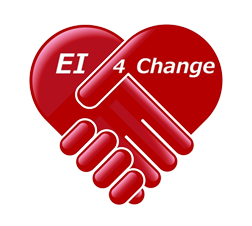

| Certification Badge | Accreditor | Description | Notes |
|---|---|---|---|
| | Life Long Learning | "Earners with this badge have proven their unwavering commitment to lifelong learning, vitally important in today's ever-changing and expanding digital world. It also identifies the qualities of an open-minded, disciplined, and constantly evolving mind, capable of using and contributing its knowledge to develop a more equal and better world." - www.certiprof.com |
| Course | Accreditor | Instructor | Certificate Number | Date | Length | View Digital Certificate |
|---|---|---|---|---|---|---|
| Understanding Sumo Logic Cloud SIEM Rules |  | Sumo Logic | N/A | September 29, 2025 | 5 minutes | N/A |
| Understanding Root Cause Explorer | | Sumo Logic | N/A | September 29, 2025 | 6 minutes | N/A |
| Understanding Infrequent Data Tier Usage | | Sumo Logic | N/A | September 29, 2025 | 4 minutes | N/A |
| Using Built-in Lookups | | Sumo Logic | N/A | September 29, 2025 | 4 minutes | N/A |
| Using Alert Response | | Sumo Logic | N/A | September 29, 2025 | 5 minutes | N/A |
| Tutorial: Setting up a Linux Source | | Sumo Logic | N/A | September 29, 2025 | 4 minutes | N/A |
| Tutorial: Setting up the AWS Observability Solution V2.4.0 Using CloudFormation Template | | Sumo Logic | N/A | September 29, 2025 | 12 minutes | N/A |
| Tutorial: Setting up an AWS CloudTrail Source | | Sumo Logic | N/A | September 29, 2025 | 6 minutes | N/A |
| Tutorial: Auto-instrumentation of a Java App by OpenTelemetry in Kubernetes | | Sumo Logic | N/A | September 29, 2025 | 10 minutes | N/A |
| Tutorial: Setting up an Apache Source | | Sumo Logic | N/A | September 25, 2025 | 7 minutes | N/A |
| Tutorial: NGINX for Non-Kubernetes Sources | | Sumo Logic | N/A | September 25, 2025 | 5 minutes | N/A |
| Tutorial: NGINX for Kubernetes Sources | | Sumo Logic | N/A | September 25, 2025 | 6 minutes | N/A |
| Troubleshoot an Incident Using Root Cause Explorer | | Sumo Logic | N/A | September 25, 2025 | 6 minutes | N/A |
| Sumo Logic App for Slack | | Sumo Logic | N/A | September 24, 2025 | 3 minutes | N/A |
| Storing Metrics in Sumo Logic | | Sumo Logic | N/A | September 24, 2025 | 4 minutes | N/A |
| Share a Dashboard (New) Inside Your Organization | | Sumo Logic | N/A | September 24, 2025 | 2 minutes | N/A |
| Setting _sourceCategory Values | | Sumo Logic | N/A | September 24, 2025 | 4 minutes | N/A |
| Reliability Management Using SLOs | | Sumo Logic | N/A | September 24, 2025 | 4 minutes | N/A |
| Create an Alert using Kubernetes Metrics | | Sumo Logic | N/A | September 24, 2025 | 3 minutes | N/A |
| Quick Onboarding with Kubernetes | | Sumo Logic | N/A | September 24, 2025 | 4 minutes | N/A |
| Planning Data Tiers Use | | Sumo Logic | N/A | September 24, 2025 | 4 minutes | N/A |
| Metrics Formats Supported in Sumo Logic | | Sumo Logic | N/A | September 24, 2025 | 5 minutes | N/A |
| Metadata and Keywords | | Sumo Logic | N/A | September 23, 2025 | 4 minutes | N/A |
| Managing Access Keys | | Sumo Logic | N/A | September 23, 2025 | 3 minutes | N/A |
| Introduction to Tracing | | Sumo Logic | N/A | September 23, 2025 | 5 minutes | N/A |
| Introduction to Threat Investigation with Cloud SIEM | | Sumo Logic | N/A | September 23, 2025 | 4 minutes | N/A |
| Introduction to Root Cause Explorer | | Sumo Logic | N/A | September 23, 2025 | 5 minutes | N/A |
| Introducing OpenTelemetry | | Sumo Logic | N/A | September 23, 2025 | 3 minutes | N/A |
| Introduction to Metrics | | Sumo Logic | N/A | September 23, 2025 | 5 minutes | N/A |
| Introduction to the Observability Solution | | Sumo Logic | N/A | September 23, 2025 | 10 minutes | N/A |
| Hosted Collector Overview | | Sumo Logic | N/A | September 23, 2025 | 4 minutes | N/A |
| Forward Data from Sumo Logic to Cloud SIEM | | Sumo Logic | N/A | September 23, 2025 | 4 minutes | N/A |
| Field Extraction Rules Basics | | Sumo Logic | N/A | September 23, 2025 | 3 minutes | N/A |
| Field Browser Overview | | Sumo Logic | N/A | September 23, 2025 | 4 minutes | N/A |
| Data Tiers Basics | | Sumo Logic | N/A | September 23, 2025 | 4 minutes | N/A |
| Data Collection Strategy | | Sumo Logic | N/A | September 22, 2025 | 4 minutes | N/A |
| Customize a Dashboard | | Sumo Logic | N/A | September 22, 2025 | 4 minutes | N/A |
| Cloud SIEM Entities | | Sumo Logic | N/A | September 22, 2025 | 4 minutes | N/A |
| Creating a Partition | | Sumo Logic | N/A | September 22, 2025 | 3 minutes | N/A |
| Creating a Simple Dashboard | | Sumo Logic | N/A | September 22, 2025 | 5 minutes | N/A |
| Creating a Dashboard | | Sumo Logic | N/A | September 22, 2025 | 4 minutes | N/A |
| Creating Ingest Budgets | | Sumo Logic | N/A | September 22, 2025 | 3 minutes | N/A |
| Creating a Custom Lookup Table | | Sumo Logic | N/A | September 22, 2025 | 4 minutes | N/A |
| Create a Threshold Rule in Cloud SIEM | | Sumo Logic | N/A | September 22, 2025 | 3 minutes | N/A |
| Create a Match Rule in Cloud SIEM | | Sumo Logic | N/A | September 22, 2025 | 5 minutes | N/A |
| Create a Chain Rule in Cloud SIEM | | Sumo Logic | N/A | September 21, 2025 | 3 minutes | N/A |
| Create an Aggregation Rule in Cloud SIEM | | Sumo Logic | N/A | September 21, 2025 | 3 minutes | N/A |
| Cloud SIEM Insight Generation | | Sumo Logic | N/A | September 21, 2025 | 5 minutes | N/A |
| Sumo Logic Security Solutions | | Sumo Logic | N/A | September 21, 2025 | 9 minutes | N/A |
| Search Mastery Self-Paced | | Sumo Logic | ucnn6zfz798s | September 19, 2025 | 107 minutes | View Digital Certificate |
| Best Practices for Organizing Data Tiers | | Sumo Logic | N/A | September 18, 2025 | 4 minutes | N/A |
| Assigning a Collector to an Ingest Budget | | Sumo Logic | N/A | September 18, 2025 | 3 minutes | N/A |
| Adding a Source | | Sumo Logic | N/A | September 18, 2025 | N/A | N/A |
| Administering Roles | | Sumo Logic | N/A | September 18, 2025 | 3 minutes | N/A |
| Administering Users | | Sumo Logic | N/A | September 18, 2025 | 2 minutes | N/A |
| Administering Policies (CloudFlex) | | Sumo Logic | N/A | September 18, 2025 | 4 minutes | N/A |
| Partitions Basics | | Sumo Logic | n62xkq2xcfaf | September 17, 2025 | 3 minutes | View Digital Certificate |
| Searching Data Tiers | | Sumo Logic | N/A | September 17, 2025 | 4 minutes | N/A |
| Introducing Search Optimization Tools | | Sumo Logic | N/A | September 17, 2025 | 2 minutes | N/A |
| Best Practices for Content Sharing | | Sumo Logic | N/A | September 17, 2025 | 3 minutes | N/A |
| Choosing a Collector Type | | Sumo Logic | ksdsao7mu3m9 | September 17, 2025 | 4 minutes | View Digital Certificate |
| Installed Collector Overview | | Sumo Logic | wrb8z4kianqd | September 17, 2025 | 4 minutes | View Digital Certificate |
| Ingest Budgets Overview | | Sumo Logic | qx4af6aojoqh | September 17, 2025 | 4 minutes | View Digital Certificate |
| Administering Password Policy and Service Allowlist Settings | | Sumo Logic | N/A | September 16, 2025 | 4 minutes | N/A |
| Account Data Management | | Sumo Logic | N/A | September 16, 2025 | 4 minutes | N/A |
| Account Overview | | Sumo Logic | N/A | September 16, 2025 | 4 minutes | N/A |
| Lawson: RepSets and IMS for Landmark Runtime Technology | Infor U Campus | N/A | September 11, 2025 | 1 hour 58 seconds | View Digital Certificate | |
| Optimization setup | | Sumo Logic | 9kry67yj5uny | September 11, 2025 | 50 minutes | View Digital Certificate |
| Data Monitoring | | Sumo Logic | 8seefga3mdpv | September 11, 2025 | 65 minutes | View Digital Certificate |
| Data Search | | Sumo Logic | 9w4vh7u4xqct | September 8, 2025 | 15 minutes | View Digital Certificate |
| Data Ingestion | | Sumo Logic | vmfrq2bmf9fh | September 8, 2025 | 40 minutes | View Digital Certificate |
| Data Collection | | Sumo Logic | fj8c23rribqc | September 7, 2025 | 35 minutes | View Digital Certificate |
| Basics and Account Configuration | | Sumo Logic | 4f3529eanf3o | September 4, 2025 | 23 minutes | View Digital Certificate |
| New to Sumo Logic? Start here | | Sumo Logic | qz4cpgtiwb73 | September 4, 2025 | 10 minutes | View Digital Certificate |
| Ultimate AWS Certified AI Practitioner AIF-C01 | Stéphane Maarek | UC-da0028aa-dc26-4162-be4b-87e0b8395e1c | April 21, 2025 | 10 hours | View Digital Certificate | |
| Infor Velocity Suite: Introduction | Infor U Campus | N/A | March 6, 2025 | N/A | N/A | |
| Generative AI for Beginners |  | Aakriti E-Learning Academy | UC-664d324e-d20b-474b-8fc1-5decaa5bd6d7 | February 15, 2025 | 3.5 hours | View Digital Certificate |
| Course | Accreditor | Instructor | Certificate Number | Date | Length | View Digital Certificate |
|---|---|---|---|---|---|---|
| Embracing a Culture of Feedback | Maureen Falvey | UC-0a27578f-2da4-4de7-a2c6-5301f7898955 | September 3, 2024 | 1 hour | View Digital Certificate | |
| Understanding Personality Types at Work |  | Robin Hills | UC-c4d30d2e-3cc1-4e0a-bce5-3d03ed711c9a | June 7, 2024 | 1.5 hours | View Digital Certificate |
| Data Analysis with Pandas and Python | Boris Paskhaver | UC-e29d2717-f61c-44e2-99b3-8472689beec4 | May 6, 2024 | 19.5 hours | View Digital Certificate | |
| Master SQL For Data Science | Job Ready Programmer | UC-b6b7a7cb-afa1-494d-bf31-f33ca293b5ce | April 11, 2024 | 9.5 hours | View Digital Certificate | |
| Infor: Introducing Time to Value | Infor U Campus | N/A | January 23, 2024 | N/A | View Digital Certificate |
| Course | Accreditor | Instructor | Certificate Number | Date | Length | View Digital Certificate |
|---|---|---|---|---|---|---|
| Linux Redhat Certified System Administrator (RHCSA - EX200) | Imran Afzal | UC-70473b83-f293-41e9-b5db-19a01d44e391 | August 17, 2023 | 14 hours | View Digital Certificate | |
| Linux Redhat System Administration I - SA1 (RHEL8) | Shikhar Verma | UC-8355a78d-6c82-4941-893b-6f55901cc60d | April 25, 2023 | 11.5 hours | View Digital Certificate | |
| Intro to Data Science: Your Step-by-Step Guide to Starting | Kirill Eremenko, Hadelin de Ponteves, Ligency 1 team, Ligency Team | UC-a122648-86e2-45ea-8af9-9afc2520aa0c | March 28, 2023 | 5 hours | View Digital Certificate | |
| Sub-topic: Machine Learning in Python and Jupyter for Beginners | David Valentine | UC-0d8fcf1b-880c-495f-ab8b-a33238046396 | March 26, 2023 | 5.5 hours | View Digital Certificate | |
| Introduction to Machine Learning for Data Science | David Valentine | UC-0d8fcf1b-880c-495f-ab8b-a33238046396 | March 21, 2023 | 5.5 hours | View Digital Certificate |
| Course | Accreditor | Instructor | Certificate Number | Date | Length | View Digital Certificate |
|---|---|---|---|---|---|---|
| Lens - Kubernetes IDE | Mumshad Mannambeth | 7EDBFA2D1D-8147ECD633-7CBD4846D5 | May 6, 2022 | N/A | View Digital Certificate |
| Course | Accreditor | Instructor | Certificate Number | Date | Length | View Digital Certificate |
|---|---|---|---|---|---|---|
| Oracle Database 12c R2 SQL: Using Subqueries to Solve Queries |  | DXC Technology | 00052429 | September 18, 2020 | 1 hour 23 minutes | View Digital Certificate |
| Oracle Database 12c R2 SQL: Using Structured Query Language (SQL) | | DXC Technology | 00049620 | September 17, 2020 | 50 minutes | View Digital Certificate |
| Oracle Database 12c R2 SQL: Data Manipulation Language and Transaction Control Language | | DXC Technology | 00049884 | September 17, 2020 | 1 hour | View Digital Certificate |
| Unix Hardening and Maintenance | | DXC Technology | 00023257 | September 16, 2020 | 34 minutes | View Digital Certificate |
| ITIL Service Design Processes | | DXC Technology | 00024986 | September 16, 2020 | 1 hour 14 minutes | View Digital Certificate |
| ITIL Service Operation Processes | | DXC Technology | 00024729 | September 13, 2020 | 43 minutes | View Digital Certificate |
| ITIL 4 Foundation: Introduction | | DXC Technology | 00057848 | September 13, 2020 | 23 minutes | View Digital Certificate |
| Spartans White Belt 3.0 Digital Transformation | | DXC Technology | 00014827 | March 6, 2020 | 17 minutes | View Digital Certificate |
| Accelerated Solution Development Overview | | DXC Technology | 00037661 | March 6, 2020 | 20 minutes | View Digital Certificate |